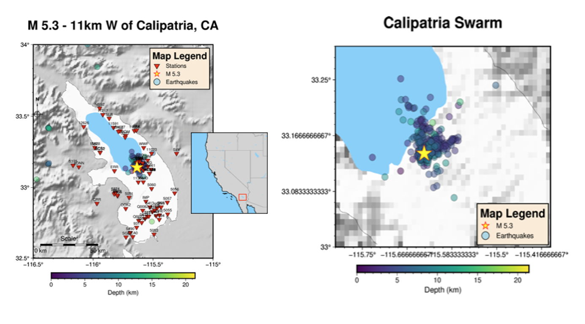
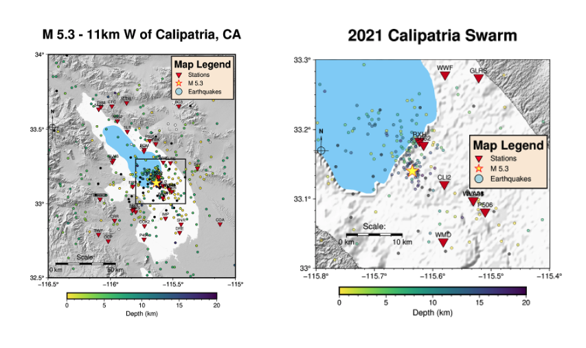

0.11 Calipatria, June 2021¶

Get stations and waveform data in directory: /app/data/20210605_Calipatria_data/
Get station data in directory: /app/data/20210605_Calipatria_data/stations/
(eq_fast) root@6006660926e5:/app/parameters/preprocess/Calipatria# python get_station_list_Calipatria.py
For these stations, download waveform data in directory: /app/data/20210605_Calipatria_data/waveforms/
Try the mass downloader first. Then try the get_waveforms function from client directly to get any data missed from mass downloader. You may need to run waveform download scripts multiple times to get all data.
(eq_fast) root@6006660926e5:/app/parameters/preprocess/Calipatria# python get_waveforms_mdl_Calipatria.py
(eq_fast) root@6006660926e5:/app/parameters/preprocess/Calipatria# python get_station_list_Calipatria.py
Not all stations from the original station list will have downloadable waveform data. Clean up the station list so that only stations with downloaded waveform data are included.
(eq_fast) root@6006660926e5:/app/parameters/preprocess/Calipatria# python clean_station_list_Calipatria.py
Need to manually arrange downloaded MSEED data into directories, with one directory per station named as:
/app/data/20210605_Calipatria_data/waveforms${STATION_NAME}/
Preprocess¶
apply 4-12 Hz bandpass filter to all MSEED data, decimate to 25 Hz (factor of 4 for 100-sps data; factor of 8 for 200-sps data). This script will output MSEED data named with “Deci..” to be used in FAST.
(eq_fast) root@6006660926e5:/app/parameters/preprocess/Calipatria# cd ../../../utils/preprocess/
(eq_fast) root@6006660926e5:/app/utils/preprocess# ../../parameters/preprocess/Calipatria/bandpass_filter_decimate_Calipatria.sh
Fingerprint¶
43 stations, 113 channels
(eq_fast) root@6006660926e5:/app/utils/preprocess# cd ../../fingerprint/
(eq_fast) root@6006660926e5:/app/fingerprint# ../parameters/fingerprint/Calipatria/run_fp_Calipatria.sh
Similarity Search¶
Ended up not using 6 PB stations (18 channels). Now 37 stations, 95 channels
(eq_fast) root@6006660926e5:/app/fingerprint# cd ../simsearch/
(eq_fast) root@6006660926e5:/app/simsearch# ../parameters/simsearch/Calipatria/run_simsearch_calipatria.sh
Postprocessing¶
(eq_fast) root@6006660926e5:/app/simsearch# cd ../postprocessing/
(eq_fast) root@6006660926e5:/app/postprocessing# ../parameters/postprocess/Calipatria/output_calipatria_pairs.sh
(eq_fast) root@6006660926e5:/app/postprocessing# ../parameters/postprocess/Calipatria/combine_calipatria_pairs.sh
Network detection¶
If list index out of range in partition, fails to keep running -> try 1 partition
(eq_fast) root@6006660926e5:/app/postprocessing# python scr_run_network_det.py ../parameters/postprocess/Calipatria/37sta_3stathresh_network_params.json
Postprocess: Clean Network Detection Results¶
(eq_fast) root@6006660926e5:/app/postprocessing# cd ../utils/network/
(eq_fast) root@6006660926e5:/app/utils/network# python arrange_network_detection_results.py
Input parameter changes made to arrange_network_detection_results.py (from Hector Mine -> Calipatria)
Input parameter changes made to remove_duplicates_after_network.sh (from Hector Mine -> Calipatria)
Input parameter changes made to delete_overlap_network_detections.py (from Hector Mine -> Calipatria)
Input parameter changes made to final_network_sort_nsta_peaksum.sh (from Hector Mine -> Calipatria)
Visualize the FAST output (739 events)¶
(eq_fast) root@6006660926e5:/app/utils/network# cat ../../data/20210605_Calipatria_Data/network_detection/sort_nsta_peaksum_37sta_3stathresh_FinalUniqueNetworkDetectionTimes.txt
Display FAST detection waveforms, descending order of peaksum-similarity¶
(eq_fast) root@6006660926e5:/app/utils/network# cd ../events/
(eq_fast) root@6006660926e5:/app/utils/events# python PARTIALplot_detected_waveforms_Calipatria.py 0 739
Input parameter changes made to PARTIALplot_detected_waveforms_Calipatria.py (from Hector Mine -> Calipatria)
Set detection threshold - keep all events with at least 3 stations¶
(eq_fast) root@6006660926e5:/app/utils/events# cd ../../data/20210605_Calipatria_Data/network_detection/
(eq_fast) root@6006660926e5:/app/data/20210605_Calipatria_Data/network_detection# head -739 sort_nsta_peaksum_37sta_3stathresh_FinalUniqueNetworkDetectionTimes.txt > EQ_sort_nsta_peaksum_37sta_3stathresh_FinalUniqueNetworkDetectionTimes.txt
Output final FAST detected event list¶
(eq_fast) root@6006660926e5:/app/data/20210605_Calipatria_Data/network_detection# cd ../../../utils/events/
(eq_fast) root@6006660926e5:/app/utils/events# python output_final_detection_list.py
Input parameter changes made to output_final_detection_list.py (from Hector Mine -> Calipatria)
(eq_fast) root@6006660926e5:/app/utils/events# cat ../../data/20210605_Calipatria_Data/network_detection/FINAL_Detection_List_Calipatria_37sta_3stathresh.txt
Cut event SAC files for phase picking¶
Input parameter changes made to cut_event_files.py (from Hector Mine -> Calipatria)
Pick phases with SeisBench¶
(eq_fast) root@6006660926e5:/app/utils/events# cd ../picking/
(eq_fast) root@6006660926e5:/app/utils/picking# python run_seisbench.py
Input parameter changes made to run_seisbench.py (from Hector Mine -> Calipatria)
Earthquake location with HYPOINVERSE¶
(eq_fast) root@6006660926e5:/app/utils/picking# cd ../location/
(eq_fast) root@6006660926e5:/app/utils/location# python SeisBench2hypoinverse.py
Input parameter changes made to SeisBench2hypoinverse.py (from Hector Mine -> Calipatria)
Input parameter changes made to output_station_file.py (from Hector Mine -> Calipatria)
(eq_fast) root@6006660926e5:/app/utils/location# cd ../../data/20210605_Calipatria_Data/location_hypoinverse/
(eq_fast) root@6006660926e5:/app/data/20210605_Calipatria_Data/location_hypoinverse/# ../../../utils/location/hyp1.40/source/hyp1.40
COMMAND? @locate_events.hyp
(eq_fast) root@6006660926e5:/app/data/20210605_Calipatria_Data/location_hypoinverse/# cd ../../../utils/location/
(eq_fast) root@6006660926e5:/app/utils/location# python output_hypoinverse_as_text.py
Input parameter changes made to output_hypoinverse_as_text.py (from Hector Mine -> Calipatria)
Mapping earthquake locations with PyGMT¶
(eq_fast) root@6006660926e5:/app/utils/location# cd ../mapping/
(eq_fast) root@6006660926e5:/app/utils/mapping# conda deactivate
root@6006660926e5:/app/utils/mapping# conda activate pygmt
(pygmt) root@6006660926e5:/app/utils/mapping# python hypoinverse_to_pygmt_Calipatria.py
